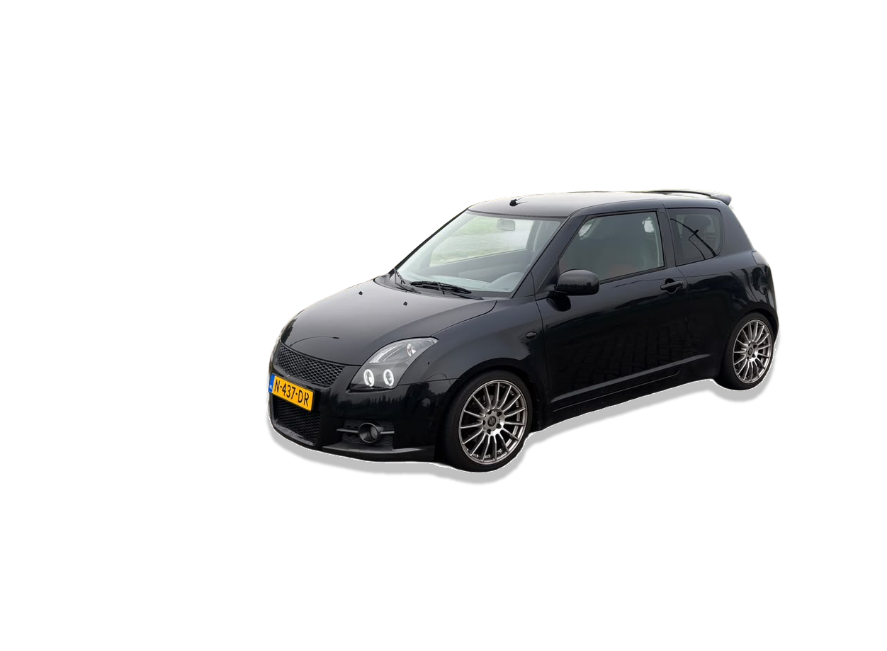

Redefine the way you Drive
Discover new looks and tech, specially designed for your car.
Before you start: Read the rules Swift Sport
Car Tuning
Swift Sport
Car Tuning
Discover new looks and tech, specially designed for your car.
Before you start: Read the rules
The modern Suzuki Swift Sport features a lightweight 1.4-litre BOOSTERJET turbocharged engine, delivering responsive acceleration and impressive performance for its size.
The Swift Sport has evolved through several generations, combining everyday practicality with sporty performance.
Aerodynamics influence how air flows around a vehicle, affecting drag, stability and efficiency.
The Suzuki Swift Sport is known for its lightweight construction, compact dimensions and responsive handling.
01 — THE ROOTS
JDM stands for Japanese Domestic Market: vehicles and parts originally intended for sale in Japan.
The Suzuki Swift Sport has Japanese roots, but European-market examples are not automatically JDM.
02 — THE SWIFT CONNECTION
The Swift Sport is known for combining a compact body with responsive handling. Its lightweight approach makes it a popular starting point for drivers who value balance over headline power.
03 — CULTURE & COMMUNITY
Japanese car culture includes everything from grassroots motorsport and track days to local meets, restoration and tuning.
Respect for craftsmanship and community is as important as the finished car.
04 — BUILD PHILOSOPHY
Good tuning starts with a clear vision: every modification should enhance performance, safety and daily usability.
Choose high-quality, compatible components and install them properly.
Explore the possibilities of your Suzuki® Swift Sport™. Learn about safe modifications and discover how to make your car truly your own.